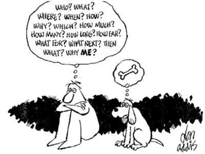

Моя теперешняя собака выполняет то же задание с огоньком в глазах и невероятной для собаки её размеров быстротой.
Поощрение в дрессировке
Методика положительного подкрепления

из книги "О чём думает ваша собака" перевод Л.Войтюк, СПб, Азбука, 1999, 304с, стр.75-84 Джон Фишер
На следующих страницах будет описан метод, который можно применять при дрессировке любых животных, но особенно он подходит для собак. Это система, целиком опирающаяся на побудительный мотив (стимул), и отвергающая физическое воздействие или силу в любых их проявлениях. Этим методом могут пользоваться даже дети. Он не требует какого-либо природного дара (таланта) дрессировщика. Он не связан с каким-то особым тоном, выбором подходящего времени, не основан на регулярной практике и не опирается на какую-либо из традиционных теорий дрессировки собак. Все, что требуется,- ваш разум и какой-нибудь лакомый кусочек.
Как научить собаку, чтобы она по команде ложилась в каком-нибудь определённом углу комнаты? Для этого существует два способа.
1. Можно бить собаку плёткой всякий раз, когда она пойдёт в какой-либо другой угол, и вообще бить до тех пор, пока она не усвоит, что указанное вами место - единственное безопасное убежище,
2. Можно дать собаке особенно вкусный кусочек в этом уголке и полностью её игнорировать, когда она пойдёт в какую-то другую часть комнаты.
Я совершенно уверен, что, прочитав эти строки, вы сказали себе: "Ну, это рассуждения на уровне здравого смысла. Что тут такого нового?"
Разумеется, это здравый смысл. Каждый владелец собаки ежедневно поступает подобным образом и дома, и вне его стен, не задумываясь о том, что и как он делает. Хотя почему-то, когда требуется сделать некоторое усилие и чему-нибудь научить свою собаку, мы становимся в позу дрессировщика и вспоминаем стародавний подход: "Ты собака, я хозяин. Я приказываю, ты подчиняешься".
Когда дома вы подзываете собаку, вы обычно намерены покормить её, или взять на поводок и повести на прогулку, или показать, что вы уронили еду на пол в кухне и хотите, чтоб она всё подчистила. Действительно, дома мы редко зовем собаку просто так, обычно это происходит по какой-то причине, и в большинстве случаев выполнение команды сулит собаке что-то приятное. В результате, лишь немногие люди жалуются, что собака не идёт на зов дома.
А в ближайшем парке дело обстоит совсем иначе. Вы гуляете, она свободно бегает, играя с другими собаками, охотится за белками, роется в мусорных урнах, в то время как вы погрузились в собственные мысли. У ворот парка вы зовёте её, чтобы вести домой. И тут она, бросив на вас взгляд, направляется в противоположную сторону. (Такое все мы видим на улице чуть не каждый день.) В этот момент вы говорите себе: "Я должен, наконец, выдрессировать свою собаку".
Вы её уже выдрессировали . Вы преуспели в том, что научили её не подходить к вам. Как? Очень просто. Собака быстро усвоила: если она не подойдет, то будет вознаграждена более длительной прогулкой. Если же она к вам подойдет, то лишится удовольствия: её отведут домой.
Если бы вы применили ваши "домашние приемы" дрессировки команды "Ко мне!", подзывая пса около ворот, давая лакомство и затем, делая ещё круг по парку, то вскоре, услышав зов, он летел бы к вам пулей.
Подкуп? Я называю это здравым смыслом. Сколько раз уже мне приходилось прятать улыбку, когда ко мне обращались люди, которые сталкиваются с проблемами нежелательного поведения своих собак, и я в ответ предлагаю им попробовать награждать собаку за хорошее поведение, вместо того чтобы думать, каким образом наказать её за нежелательное поведение. Хозяева недоумевают: "Вы хотите сказать, что я должен его подкупать?"
По-моему, это довольно забавно: то, чему ученые, психологи и бихевиористы (специалисты по проблемам поведения) придумали замысловатые названия вроде "модификации поведения", "реабилитационная психотерапия", "психология поведения" и так далее, широкой публикой всё ещё расценивается как подкуп. Впрочем, на самом деле важно другое - при правильном применении положительное подкрепление весьма эффективно: оно изменяет нежелательное поведение.
Существует ряд основополагающих принципов, которые определяют успех применения положительного подкрепления как метода дрессировки. Но прежде чем начать применять эти принципы, или законы, с помощью специальных обучающих упражнений в процессе дрессировки собак, необходимо рассмотреть отдельно каждую стадию обучения, её цель и ожидаемый результат. Можно было бы дать научное название каждой стадии, например: контроль раздражителя, угасание реакции на окружающую обстановку (behaviour extinction), вытеснение данной модели поведения другой моделью, последовательная аппроксимация и так далее, - но это слишком скучно, и я не буду этого делать. Если вы хотите познакомиться с методикой на высоком научном уровне и более подробно, рекомендую посетить в местной библиотеке отдел, посвященный психологии. Нас же интересует только то, как действует положительное подкрепление и как его применяют.
Как действует положительное подкрепление
Прежде всего, мы вообще должны забыть об упражнениях. Всё, что нас интересует для начала, - это первый шаг в нужном направлении. Вспомним уже приводившийся пример с касаткой и представим себе, что мы хотим научить касатку выпрыгивать из воды. Мы даём свисток (команду) и ждём. Затем ждём ещё немного, а зачастую бывает, что ждём ещё и ещё.
Очевидно, сначала касатка не имеет представления о том, что от неё требуется, когда звучит свисток. Поэтому нам приходится ждать, чтобы она зачем-нибудь высунула нос из воды. Точно в этот миг мы снова свистим в свисток и даём ей рыбу. Когда она проплывает внизу, мы снова свистим и ждём. Процедура повторяется до тех пор, пока касатка не выйдет на уровень "ага!": "Ага! Когда я слышу звук свистка, я получаю рыбу".
Этот уровень понимания - уровень "ага!" - не может считаться закрепленным, до тех пор пока вы не добьётесь, чтобы происходило десять из десяти возможных немедленных реакций на свисток. Пока это не достигнуто, не следует переходить к следующему этапу дрессировки. На первом её этапе кажется, что прогресс не очень заметен, однако для успеха обучения крайне важно, чтобы каждый этап заканчивался достижением уровня полного понимания. Если вы этого добьётесь, то обнаружите, что, по мере перехода к каждому следующему этапу, превращение первоначальной реакции в распознаваемую цепочку движений идёт очень быстро.
Теперь мы подходим к этапу дрессировки, который называется "формирование". Нам нужно заменить уже сложившуюся цепочку: "свисток - появление носа - обязательная рыбка", новой цепочкой: "свисток - касатка выпрыгивает из воды - рыбка дается иногда". Достигается это следующим образом.
Формирование поведения означает, что мы делаем один маленький шаг в нужном направлении и продвигаемся к конечной цели, подкрепляя каждый сделанный шаг. Так мы обеспечиваем безусловное выполнение этой части цепочки, прежде чем двигаться дальше. Здесь наблюдается интересное явление: выполнение определённых действий, надежно затренированное с помощью вознаграждения, можно сделать ещё более чётким, если вознаграждение задерживать.
Предположим, затренирована такая реакция касатки: на десять свистков она десять раз немедленно высовывает нос из воды. На одиннадцатый раз мы говорим: "Недостаточно хорошо, рыбы ты не получишь".
Можно предположить, что теперь касатка подумает: "Но я всегда получаю рыбку. Наверное, кто-то её стащил раньше меня. В следующий раз надо живее пошевеливаться". И на двенадцатый раз вы получите более быструю и энергичную реакцию касатки: она высунет из воды всю голову целиком. За это, безусловно, полагается рыбка, но теперь и в дальнейшем - только за это.
Дальше будем формировать цепочку: "свисток - появление из воды всей головы целиком - при немедленной реакции рыбка в награду в десяти случаях из десяти". Лишь затем можно будет перейти к следующему этапу. Кажется, что обучаемый с каждым этапом всё скорее понимает, что от него требуется, и возникает эффект снежного кома.
Я намеренно воспользовался примером касатки, чтобы подчеркнуть главное: весь процесс обучения может осуществляться без какого-либо физического воздействия. Сначала мы ждём верного шага в нужном направлении и вознаграждаем его, затем закрепляем и придаем законченную форму.
Хозяин: "Какая разница между всем этим и подкупом?"
Я: "Подкуп - это использование награды в качестве соблазна, для того чтобы стимулировать движение. Подкрепление - это вознаграждение, получаемое за добровольное движение".
Хозяин: "Всегда ли давать награду?"
Я: "Прием действует лучше, если вы даете награду не всегда. Когда модель поведения сформирована, только самая быстрая, ярко выраженная и сильная реакция вознаграждается. Иногда ученику придётся выполнить отработанную цепочку шесть или семь раз, прежде чем последует вознаграждение".
Хозяин: "Обязательно ли давать в награду что-то съедобное?"
Я: "Наградой может быть что-то другое, ради чего, с точки зрения ученика, стоит выполнять определённые действия. Было бы бессмысленно пытаться сформировать моё поведение с помощью тарелки капусты. Терпеть не могу капусту!
Как применять положительное подкрепление
В предыдущей главе я рассказал о том, как научил свою первую собаку искать и приносить вещь (соответствует команде "Апорт!"). Теперь я расскажу вам, как я научил выполнять это задание свою нынешнюю собаку.
На обучение моей первой собаки ушло несколько недель, и она так и не научилась выполнять команду по-настоящему хорошо. Это была немецкая овчарка, - порода славится хорошей обучаемостью. Моя теперешняя собака выполняет то же задание с огоньком в глазах и невероятной для собаки её размеров быстротой. Это - японская акита, порода, известная своим упрямством.
Я провел много времени на дрессировочной площадке, в течение ряда недель, обучая мою немецкую овчарку. В течение нескольких дней, затрачивая несколько минут в день, я обучил акита, ни разу даже не встав с кресла.
Используя этот метод, я недавно помог проводнику полицейской собаки достичь того же результата при дрессировке немецкой овчарки. Фактически нам потребовалось меньше обычного времени, чтобы довести совершенно необученную собаку до стандарта министерства внутренних дел, причем полученные результаты были гораздо выше тех, которых добиваются, применяя обычные методы дрессировки.
Кличка моей собаки - Йоко. Поняли? Джон и Йоко. Ей было пятнадцать месяцев, когда я решил научить её искать и приносить брошенный предмет. Сейчас у меня не остаётся времени, чтобы самому участвовать с моими собаками в соревнованиях, где собаки демонстрируют свои умения, но я всё ещё сужу такие состязания. И вот однажды один хозяин-участник обронил мимоходом замечание, которое побудило меня учить мою собаку искать и приносить брошенный предмет. Парень сказал: "Вы никогда не научите акита выполнять эту команду как следует". Когда мне бросают вызов, я загораюсь.
Я сидел за письменным столом в своей приемной, рядом на столе я поставил коробочку с лакомством. Протягивая собаке гантель, я говорил: "Возьми!" Йоко нюхала перекладину, а я говорил: "Хорошая девочка!" - и давал ей угощение.
Первое занятие продолжалось около пяти минут, и она получила вознаграждение сразу после быстрой реакции примерно в 60% случаев. В остальных случаях за правильные реакции иногда тоже давалось вознаграждение, но только после того как собака нюхала стол, карабкалась на меня, лаяла или делала ещё что-нибудь, стараясь получить вознаграждение. На следующем занятии в тот же день удалось достичь уровня понимания (уровень "ага!"). Йоко тыкалась носом в гантель всякий раз, когда я давал команду.
На формирование действия и переход к следующей стадии потребовалось несколько больше времени. В течение четырех занятий по пять минут каждое она пробовала делать самые разные вещи, чтобы получить награду. Отношение было: 15%; 25%; 70%; 100%. Теперь я уже требовал, чтобы она не тыкалась в гантель носом, а лизала её. Не дав ей угощения, когда она в очередной раз лизнула гантель, я попал в точку, что вызвало эффект снежного кома гораздо раньше, чем я сам того ожидал. Она решительно выхватила гантель у меня из рук и смотрела на меня, как будто говоря: "Смотри, глупыш, я её взяла... Давай еду!"
Никто не может заранее определить модель формирования поведения при выполнении задания. Мы можем запланировать известную структурированную последовательность, но при обучении нам придётся руководствоваться темпом, который установит само животное. После того как вы вознаградили собаку за определённое движение, оно должно стать единственным движением, за которое дается награда, пока оно не будет затренировано. Йоко сделала больший шаг вперед, чем я ожидал, и, поскольку я её с энтузиазмом наградил, мне пришлось ждать, чтобы она его повторила. Это отняло меньше времени, чем я ожидал, но надо учесть, что Йоко очень прожорливая собака.
После такого огромного рывка вперёд вся цепочка действий формировалась очень легко. Прошло совсем немного времени, и я уже бросал гантель на кушетку в дальнем конце приемной, а Йоко приносила её по команде, и садилась передо мной, держа её в зубах, гордая.
В первый же раз, когда на свежем воздухе я попробовал дать одно из тех упражнений, что предлагаются на состязаниях, она получила бы у меня за их выполнение все десять баллов из десяти. Но, кажется, я несколько пристрастен.
Возьмем теперь два простых действия: выполнение команд "Сидеть!" и "Лежать!". Попытаемся, используя наш метод и не применяя силу, научить собаку чётко реагировать на данные команды.
Чтобы ускорить процесс, необходимо прибегнуть к подкупу. Иными словами, мы показываем награду, чтобы стимулировать движение. Как только достигается этот уровень понимания, мы обращаемся к команде, и подаем её только голосом, затем ждём, чтобы было сделано верное движение. Тогда мы придаём этому движению законченный вид.
Для отработки команды "Сидеть!" покажите собаке лакомство, даже дотроньтесь им до кончика её носа. Скажите: "Сидеть!" - и медленно переместите лакомство вверх и назад, чуть дальше линии глаз собаки. Сложение у собак такое, что если голова поднимается вверх и назад, то задняя часть туловища непременно опускается.
Для отработки команды "Лежать!" выберите такое препятствие, чтобы для его преодоления собаке нужно было лечь на брюхо. Это будет зависеть от размера собаки. Например, для немецкой овчарки подошёл бы кофейный столик. Подведите к нему собаку и предложите ей лакомство, держа его в руке под столиком, то есть под препятствием. Когда собака потянется за лакомством, медленно отодвигайте его под препятствием, побуждая собаку двигаться следом и командуя при этом: "Лежать!" В тот момент, когда её брюхо коснется пола, дайте вознаграждение.
Теперь, когда мы научили свою собаку делать то, чего мы от неё добиваемся, остаётся отучить её делать то, что нам не нравится. Для достижения этой цели используем систему отрицательного подкрепления.